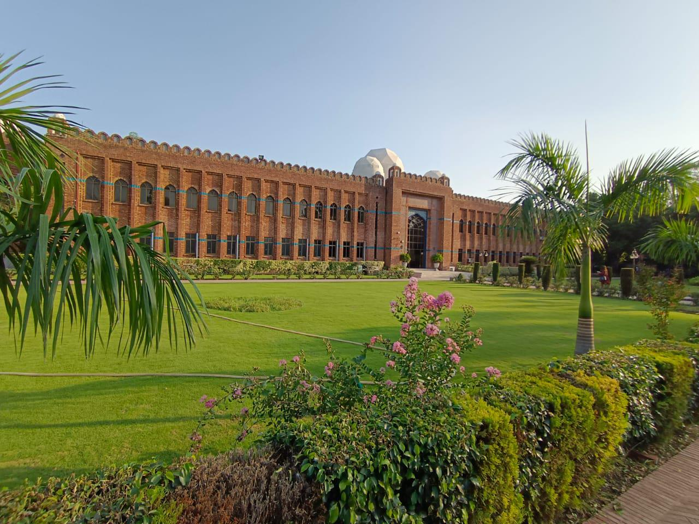
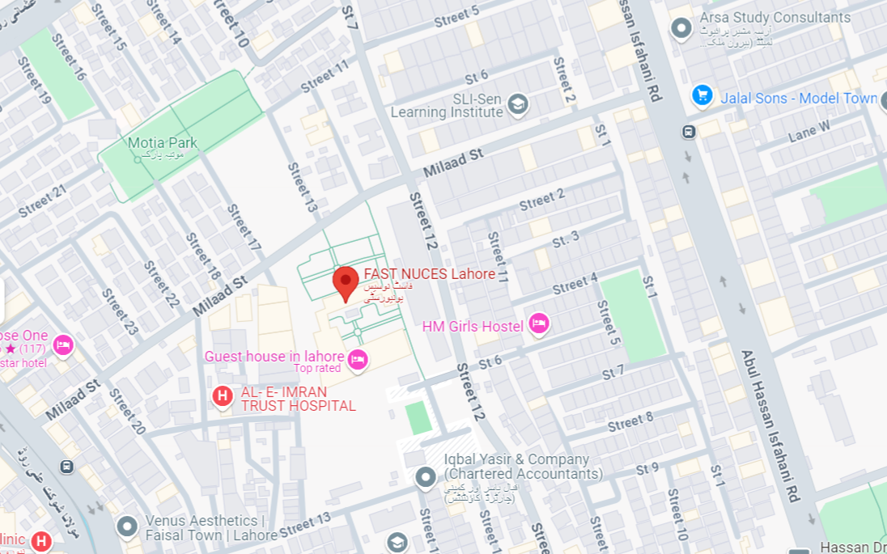

The AICRAL 2025 conference will take place at the FAST National University of Computer and Emerging Sciences (NUCES), Lahore Campus.

The Lahore Campus, spread over 12.5 acres, is located in Faisal Town which is the heart of greater Lahore. The campus consists of three blocks, which with their striking exterior brickwork and magnificent marble domes are a valuable addition to the rich architectural heritage of Lahore, Pakistan.

The Google Maps mobile app is designed to assist visitors with navigating the FAST-NUCES campuses.